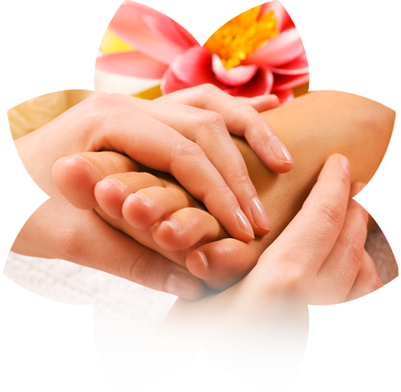

How Foot Reflexology can help you Relieve Pain Naturally

If you’re searching for a natural, gentle way to alleviate pain without relying on medications, foot reflexology might be worth considering. Rooted in ancient healing practices, foot reflexology is a therapeutic approach that uses specific pressure techniques to stimulate reflex points on the feet, believed to correspond to different areas of the body. By targeting these zones, reflexology aims to release blockages, enhance circulation, and promote natural healing—allowing you to manage pain holistically.
Understanding Foot Reflexology and Pain Relief
Foot reflexology is based on the concept that our feet mirror our body’s systems and organs, each area of the foot corresponding to a different part of the body. When pain or tension accumulates, reflexologists believe this may result from disruptions in our body’s energy pathways. Reflexology applies targeted pressure to specific reflex points, releasing blocked energy, improving circulation, and stimulating the nervous system.
Types of Pain Foot Reflexology Can Help Alleviate
Reflexology has shown promising results for various types of pain, making it a versatile tool for natural pain relief. Here are some types of pain it may help alleviate:
- Back Pain
Lower back pain is one of the most common discomforts people experience. Reflexologists focus on the heel and lower arch of the foot, which are believed to correspond to the lower spine. Massaging these points may help ease tension in the back muscles, reduce stiffness, and alleviate soreness. - Headaches and Migraines
Headaches are often associated with tension in the neck, shoulders, and upper back. By applying pressure to the tips of the toes and specific areas on the foot’s top and sides, reflexology can relieve stress in these areas, potentially reducing the intensity and frequency of headaches. - Joint and Muscle Pain
For those dealing with arthritis or general joint pain, reflexology can be beneficial in reducing inflammation and improving circulation to areas associated with the pain. Reflexologists typically focus on areas that correspond to joints, such as the heels and toes, helping to ease discomfort and improve mobility. - Digestive Discomfort and Abdominal Pain
Stomach pain and bloating can often be linked to stress or poor circulation. Reflexology targets the arch of the foot, which corresponds to the digestive system. By working on these points, reflexology can help ease bloating, constipation, and discomfort, promoting a more relaxed and balanced digestive system. - Neck and Shoulder Pain
The top and side edges of the foot are thought to connect with the neck and shoulder region. Reflexologists often massage these areas to relieve tightness and pain, potentially reducing stiffness and increasing comfort in the neck and shoulder muscles. - Foot and Ankle Pain
While foot reflexology works to relieve pain in other parts of the body, it’s also highly effective in addressing pain within the feet and ankles themselves. This therapy helps improve blood flow, reduce swelling, and release tension in the feet, which can be beneficial for those who are on their feet often or experience conditions like plantar fasciitis.
How Reflexology Relieves Pain Naturally
Reflexology isn’t just about applying pressure; it’s also a form of energy work that involves stimulating the nervous system, enhancing circulation, and supporting the release of endorphins—the body’s natural painkillers. When reflexology targets specific pain-related reflex points, it prompts the nervous system to send signals that help regulate pain, reduce inflammation, and improve mobility.
Reflexology also encourages the release of serotonin and dopamine, which are essential neurotransmitters for managing pain and maintaining a positive mood. The simple act of receiving regular reflexology can, over time, support the body’s natural ability to manage pain and promote a state of relaxation and calm.
Can You Use Reflexology at Home?
While a trained reflexologist can target points with skill and precision, you can practice some basic reflexology techniques at home to manage pain between sessions. Here are some easy techniques:
- For Headaches: Gently press and massage the tips of each toe for a few minutes, as these points correspond to the head and neck. Focus on the big toes, which are thought to connect to the brain and neck regions.
- For Lower Back Pain: Apply firm but gentle pressure to the heel and the area along the arch, using small circular motions. Spend extra time on the lower arch, which is linked to the lumbar region of the spine.
- For Digestive Pain: Massage the arch of the foot in slow, circular movements to stimulate the digestive reflex points. This can be especially helpful for soothing bloating or abdominal discomfort.
The Natural Path to Pain Relief
Incorporating foot reflexology into your routine can be a rewarding step towards relieving pain naturally, without relying on pharmaceuticals. Each session offers a moment of calm and self-care, allowing your body to reset, heal, and thrive.